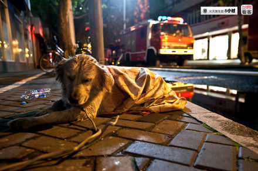
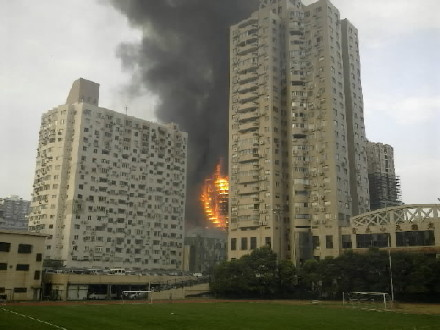

这次火灾太多人失去了亲人，他们的心有多痛旁人是体会不到的，当主人不见的时候，狗狗的焦急和无助，我们更是体会不到。狗狗会因为主人不见了不吃不喝守在那里，也许主人没有回来狗狗也活不了了。而为什么那些自以为是高级动物的会对动物如此的不负责，总是为满足自己的欲望去宰杀那么多同类呢？？？同样是四肢腿的生物，为什么那么的不公平，鱼儿也是我们的同类，为什么玉佛寺鱼池里的鱼儿见到人就像小狗见到主人一样的开心，当你伸手去喂鱼食的时候，那些鱼儿就像是见到好朋友一样游到你的手心，只能说它们幸运从来就没有被伤害过。但为什么那么多鲨鱼要不幸被我们打捞上来割下鱼翅后再扔进海里就慢慢死去了呢？我一直认为所有的生物都可以像朋友一样的！唉！说了也白说，作为同类我感到非常惭愧，难道真的要让灾难降临到自己身上我们才会醒悟吗？
胶州路是我经常路过也是我很害怕路过的地方，07年12月公司的副总经理我最亲爱的王老师在胶州路的家不幸煤气中毒和肚子里宝宝永远的离开了，当事我在北京工作，连老师的最后一面都没有见到......
第二图片是经济人在事发现场拍下传给我的彩信，其实我就才不远处的地方工作，但却什么也做不了...
直到现在也没敢多看相关的新闻和图片，说再多安慰的话也唤不回那么多生命，但还是真心的希望那些还在医院的伤者们尽快好起来，也希望那些绝望的家属们能更加坚强好好活着。我想我们能做的就是更加珍惜生命，珍惜所有的生命...

